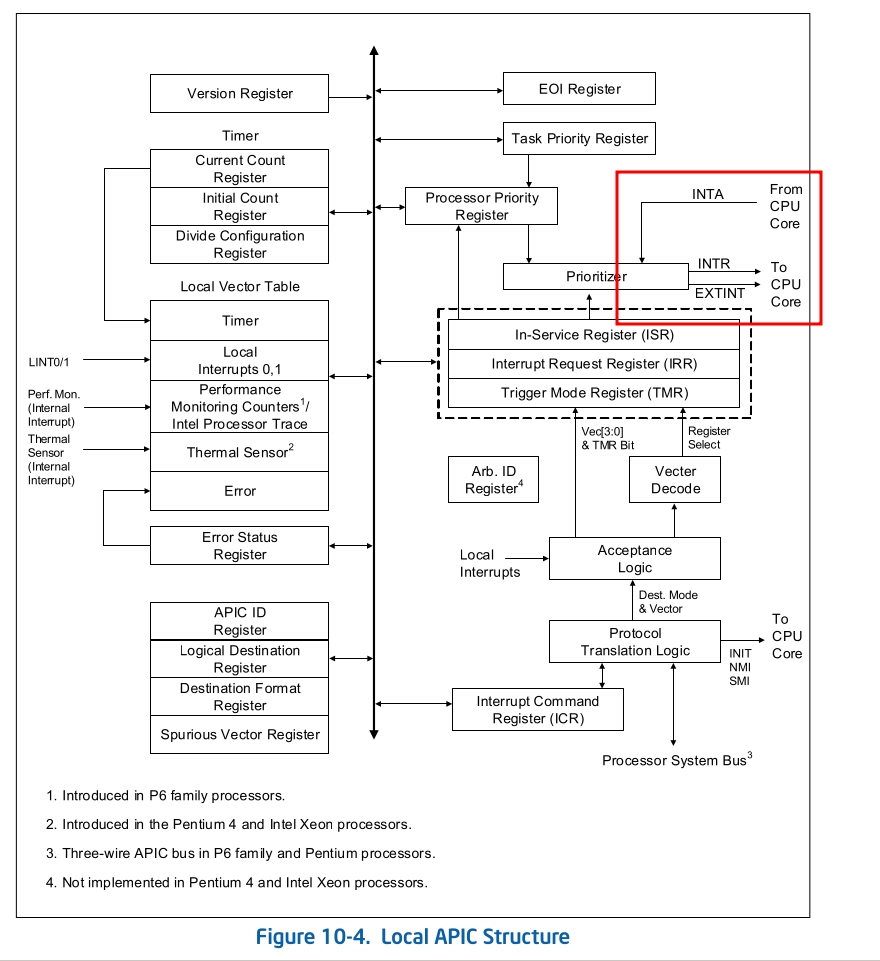

vapic
intruduction
VM root operation上接收external interrupt逻辑

引入该功能原因
在没有引入virtual apic之前，如果想将一个中断注入到guest，
只能通过Event injection(事件注入) 的方式注入中断(详见
intel sdm 26.6)
该方式有一些缺点:
- 一次只能注入一个中断
- 并且注入的时间点，只发生在vm entry, 所以受interrupt window 的影响，可能会导致软件注入中断不成功，需要软件特殊处理。
那么我们来看, 上面的两个缺点，kvm(software)这边是如何处理的:
一次只能注入一个中断:
当如果本次vm entry 发现有多个中断需要注入时，设置VMCS中的primary processor-based VM-execution controls中的interrupt-window exit字段。因为在注入中断过程中会将interrupt-windows关闭(实际上 也就是将IF=0)，所以等guest software 将interrupt-windows开启时， 就使其产生vm-exit, 然后在下次的vm entry中在将下一个中断注入。受interrupt-window 影响
如果本次vm entry发现interrupt-windows关闭(主要有guest的 IF=0，或者VMCS中Guest-state Aare中Interruptibility state中的某些位为1(详见intel sdm 24.4.2 Guest Non-Register state), 那么在本次vm-entry 就不注入中断， 然后把interrupt-window exit字段置1，让guest在interrupt window开启的时候产生vm exit, 然后在下次vm entry 时注入 中断。
所以我们来看上面的影响，处理上面两种情况时，会产生多次的vm
exit。另外还有guest software 对于apic register的访问，这里面
有些寄存器可能访问的比较频繁，例如TPR，所以为了减少vm exit,
intel 引入了 APIC Virtualization 和 virtual interrupt。
引入上述功能后，可以在一次vm-entry中注入多个中断，并且 无需关心interrupt window, 并且，还可以使用posted-interrupt 在 VMX non-root operation 下，通过修改PID(posted-interrupt descriptor)和向其发送一个特殊的中断NV(notification vector), 注入中断。
我们来看下上述功能的实现
vapic实现
apic 虚拟化，最底层的是要虚拟化apic 的这些寄存器，而intel 这边的实现 是在将这些寄存器虚拟化在内存中，读写某些寄存器硬件方面会有一些虚拟化 的动作, 如果是读的话，会从内存中某个偏移处获取到寄存器的值，如果是读的话， 可能还会有额外的emulation 的操作。
上面提到的这个page，被称为virtual-APIC page, 该page 是一个4-KByte的内存区域，
该page的物理地址，需要配置在VMCS中virtual-APIC address字段中。
对于guest software 可能会有以下的场景访问 APIC register:
- 直接访问
- 如果是xapic，内存读写指令访问到APIC mapped page 的某些偏移地址
- 如果是x2apic, 通过RDMSR, WRMSR 访问到和APIC相关的某些MSR的 encoding
- 非直接访问
- 可能有一些其他的情况访问到了APIC mapped page , 例如page table walks. 详见(intel sdm 29.4.6 APIC Accesses Not Directly Resulting From Linear Addresses)
- 某些 access vapic regsiter 的emulate行为，或者是virtual interrupt process 过程中会发生对该资源的访问
- mov to CR8
NOTE:
这里的访问有读写操作，读操作其实没有什么，主要是写操作，因为 写操作不仅要将欲写入的值同步到
virtual-APIC page, 而且还可能会有一些 virtualization的操作，请看后面的章节。
而上面也提到，VAPIC目前只对部分寄存器有virtualization的行为，寄存器列表如下:
- virtual task-priority register:VTPR
- virtual processor-priority rresigter:VPPR
- virtual end-of-interrupt register:VEOI
- virtual interrupt-serive register:VISR
- virtual interrupt-request register:VIRR
- virtual interrupt-command register:VICR_LO
- virtual interrupt-command register:VICR_HI
为支持vapic, 在VMCS中提供了一些控制字段，来控制一些virtualization的行为:
- Virtual-interrupt delivery: 使能该功能，使得VMX non-root operation下 可以去delivery pending virtual interrupt, 并且还可以控制TPR virtualization 的行为，我们下面会看到
- Use TPR shadow: CR8 virtualization中会提到
- Virtualize APIC access: 使能该功能，可以虚拟化
memory-mapped access的行为， 这个地址是GUEST APIC MAP PAGE 通过EPT转换后的 phyiscal address, 是一个HPA, 那么virtual APIC address也是一个HPA, 那么这两个页之间有什么联系么，在 下面的章节讲述下自己的看法。 - Virtualize x2APIC mode: 以MSR的方式访问vapic, 这个功能要好用些，一方面没有 那么多的异常情况需要考虑，另一方面效率也高，因为不需要mmu介入。
- APIC-register virtualization:
- Process posted interrupts
本章主要是将memory-mapped APIC Access 的虚拟化行为(MSR-based 和其差不多)。
在介绍memory-mapped APIC access之前, 我们先看非直接访问的mov to CR8操作，
这个操作比较特殊，它并没有去访问apic 的资源，而在64-bit mode下，对于该寄存
器的access, 实际上就是访问的APIC的TPR register, 对于host是这样，而对于
guest，它实际上需要访问vapic的VTPR, 我们来看下guest 是怎么控制的。
CR8 virtualization
在VMCS的primary processor-based vm-execution controls提供了3个字段，用于
CR8 virtualization:
- CR8-load exiting: Mov to CR8 cause VM exits
- CR8-store exiting: Mov from CR8 cause VM exits
- use TPR shadow: 开启该选项使得 CR8-load/store 行为 实际上是去 access VTPR
我们来看，当使能了use TPR shadow 后，VMX non-root operation下访问CR8,
实际上是访问的 VTPR, 据说早期的vapic的实现很有限,
仅仅是控制eCR8的访问。
接下来我们来看下Virtualization memory-mapped APIC Access
Virtualization memory-mapped APIC Access
在xapic 模式中，软件对于local APIC寄存器，可以使用内存映射的方式进行访问。
详细来说，可以通过使用翻译为IA32_APIC_BASE MSR指示的物理地址的线性地址进行访问。
在没有引入vapic之前，对于该内存区域的访问通常会造成vm-exit。这个VM-EXIT的行为是由
VMM去控制的，在vm exit后，可以对该访问进行 emulate，可以使用paging或者EPT达到这
个目的。当intel 支持了vapic后，可以通过设置virtual APIC access vm-execution
control 改变这一行为。
当virtual APIC access控制字段为1 后，处理器相会对翻译地址落在4-KByte
APIC-access page的线性地址的访问特殊对待。(关于APIC-access page, 是一个
VMCS中的字段，详见24.6.8)。
通常来说，访问APIC-access page 会导致APIC-access VM exit。这个vm exit
提供给VMM一些VM exit的原因。而当设置了某些VM-execution controls时，
处理器会虚拟化某些对于APIC-access page 的访问，并且不产生VM exit。
这些virtualization 将会对virtual-APIC page进行访问而代替对APIC-access page
的访问。
NOTE
上面提到过，
APIC-access address和virtual-APIC address都对应的是HPA， 为什么要设置两个地址呢，他们之间有没有什么关系呢?我觉得没有关系，硬件可能处理是这样，在VMX non-root operation下，访问一个 APIC page中的address, 这个address 是GVA, 此时, CPU也不知道该地址是不是APIC page 中的地址，需要通过MMU将其转换成HPA，拿到HPA之后，再将该HPA和
APIC-access address比较，如果相等，那么就认为该地址是VAPIC page的地址，在执行些emulation 的操作，例如往VAPIC page某个偏移访问，注意，这个时候CPU访问的是virtual apic page, 而不是APIC access page。
那我们来看下，为什么APIC-access address不能是一个GVA/GPA+ GVA: 因为GVA是guest 做的内存映射, kvm侧拿不到 + GPA: 因为GPA的获取也是通过mmu 通过将GVA->GPA, 获得，而如果映射建立 完整的话，GVA->HPA, 而不完整的话，则会抛一个异常，这个异常不知道是 mmu的处理逻辑抛，还是CPU抛，如果是mmu抛的话，就必须使用HPA了，如果是 CPU抛，可能会涉及一些多增加的CPU的处理逻辑的调整，也不合适。 因为手册29.4.1 讲述了`priority of APIC-Access VM Exits`, 里面讲述到 由于内存访问导致的`APIC-access VM exit`比page fault 或者EPT violation 要低，从这点是不是可以猜测, 该异常可能是mmu抛呢?(自己的猜想)
对于APIC-access page的访问主要有read/write两种访问。
我们先来看下读访问的虚拟化行为。
Virtualizing Read from the APIC-Access Page
对于写操作来说呢，读操作还是比较简单，因为没有复杂的virtualizing操作，当对APIC-access
进行读操作时，只需要判断是否满足virtualize的条件，如果满足的话，则从virtual
APIC page的某个偏移处读取内存值即可。
本章节主要来看下，哪些virtual APIC register在什么条件下可以被virtualize。
如果下面的任意条件为true的情况下，访问APIC-access page将会产生APIC-access VM exit
use TPR shadowVM execution control 为0- 该访问通过预取指令访问
- 该访问访问的地址宽度大于32 bits
- The access is part of an operation for which the processor has already virtualized a write to the APIC-access page.(没看懂)
- The access is not entirely contained within the low 4 bytes of a naturally
aligned 16-byte region. That is, bits 3:2 of the access’s address are 0, and
the same is true of the address of the highest byte accessed.
因为apic page中的寄存器是按照16-byte 对齐，但是这些寄存器都是32bits的。 所以在VMX root operation 下, 访问这些寄存器的4byte~15byte 将会导致undefine behavior, 而这里就是在解释这种情况。在VMX non-root operation 下，则会导致APIC-access VM exit。
上面这几条比较关键的是use TPR shadow，该功能是可以将对VMX non-root operation
下对CR8的访问，virtualize为对 virtual apic page 中VTPR的访问，该功能是intel 对
vapic最早的功能支持，该功能不需要其他的 VM execution control 的开启，就可以
支持该功能。请看下面：
如果上面的选项是真，一个读操作是否被虚拟化，依赖于APIC-register virtualization
VM-execition control 的设置:
- 如果
APIC-register virtualization和virtual-interrupt deliveryVM-execution control均为0，除了对page offset 080H(VTPR) 的读访问可以被virtualized; 其他 情况均造成一个APIC-access VM exit - 如果
APIC-register virtualizationVM-execution control 为0,而virtual-interrupt deliveryVM-execution control 为1, 对下面的page offset 的读访问可以被 virtualized, 否则将会产生APIC-acceess VM exit- 080H(VTPR)
- 0B0H(VEOI)
- 300H(VICR_LO)
- 如果
APIC-register virtualization为1, 对于下面范围的读访问将会被virtualized:- 020H–023H (local APIC ID);
- 030H–033H (local APIC version);
- 080H–083H (task priority);
- 0B0H–0B3H (end of interrupt);
- 0D0H–0D3H (logical destination);
- 0E0H–0E3H (destination format);
- 0F0H–0F3H (spurious-interrupt vector);
- 100H–103H, 110H–113H, 120H–123H, 130H–133H, 140H–143H, 150H–153H, 160H–163H, or 170H– 173H (in-service);
- 180H–183H, 190H–193H, 1A0H–1A3H, 1B0H–1B3H, 1C0H–1C3H, 1D0H–1D3H, 1E0H–1E3H, or 1F0H– 1F3H (trigger mode);
- 200H–203H, 210H–213H, 220H–223H, 230H–233H, 240H–243H, 250H–253H, 260H–263H, or 270H– 273H (interrupt request);
- 280H–283H (error status);
- 300H–303H or 310H–313H (interrupt command);
- 320H–323H, 330H–333H, 340H–343H, 350H–353H, 360H–363H, or 370H–373H (LVT entries);
- 380H–383H (initial count); or
- 3E0H–3E3H (divide configuration).
除了上面的情况，其他的访问都会造成
APIC-access VM exit
而对于上面描述的virtualize行为，实际上就是从virtual-APIC page相应的偏移处，读取其相应的值。
上面说完了对APIC-access page 读操作的虚拟化，下面说下写操作
Virtualizing Write to the APIC-Access Page
不同于读操作，写操作实际上会造成一些影响，例如，在VMX root operation下，写ICR寄存器，
可能会导致发送IPI中断，所以写操作的虚拟化行为要复杂一些，不仅要在virtual
APIC page相应的偏移处写入值，而且还有一些针对性的emulation
操作。而在某些情况下，则会出现，在virtual APIC page相应的位置写入值后，还是要
产生VM exit。
并不是对APIC-access page 的所有位置的写操作都需要被virtualized, 而且还受
VM-execution control 某些字段的限制，我们先来看下哪些情况会被virtualized。
Determining Whether a Write Access is Virtualized
下面任意情况为true将导致 APIC-access VM exit:
use TPR shadowVM-execution control 为0- 该访问地址宽度超过32 bits
- The access is part of an operation for which the processor has already virtualized a write (with a different page offset or a different size) to the APIC-access page.(这个不懂)
- The access is not entirely contained within the low 4 bytes of a naturally aligned 16-byte region. That is, bits 3:2 of the access’s address are 0, and the same is true of the address of the highest byte accessed.(同读操作)
如果上述情况都不满足，写操作是否被virtualized依赖于APIC-register
virtualization和virtual-interrupt deliveryVM-execution control
的设置:
- 如果
APIC-register virtualization和virtual-interrupt delivery都是 0, 除了对080H偏移处(VTPR)的访问可以被virtualized, 其他的情况，都会 造成APIC-access VM exit。 - 如果
APIC-register virtualization为0,virtual-interrupt deliveryVM-execution control为1, 对下面页内偏移的访问会被virtualized, 其他的 情况，都会造成APIC-access VM exit- 080H(VTPR)
- 0B0H(VEOI)
- 300H(VICR_LO)
- 如果
APIC-register virtualizationVM-execution control为1，对于下面页内 偏移的写访问均被virtualized.- 020H–023H (local APIC ID);
- 080H–083H (task priority);
- 0B0H–0B3H (end of interrupt);
- 0D0H–0D3H (logical destination);
- 0E0H–0E3H (destination format);
- 0F0H–0F3H (spurious-interrupt vector);
- 280H–283H (error status);
- 300H–303H or 310H–313H (interrupt command);
- 320H–323H, 330H–333H, 340H–343H, 350H–353H, 360H–363H, or 370H–373H (LVT entries);
- 380H–383H (initial count); or
- 3E0H–3E3H (divide configuration).
除上面的其他情况, 都会导致APIC-access VM exit
处理器在virtualize上面的写操作后，接下来可能会执行APIC-write emulation,
我们来看下。
APIC-Write Emulation
上面提到，如果是对某些page offset的写操作，在写入virtual APIC page后，
可能会有额外的emulate行为，细节如下:
- 080H (VTPR) : 处理器会清空VTPR的3:1 bytes, 并且执行
TPR virtualization - 0B0H (VEOI) : 如果
virtual-interrupt deliveryVM-execution control 为1，处理器清空VEOI 然后执行EOI virtualization - 300H(VICR_LO): 如果
virtual-interrupt deliveryVM-execution control 字段为1, 处理器检查VICR_LO的值，判断其值是否符合下面的条件:- Reserved bits (31:20, 17:16, 13) and bit 12 (delivery status) are all 0.
- Bits 19:18 (destination shorthand) are 01B (self).
- Bit 15 (trigger mode) is 0 (edge).
- Bits 10:8 (delivery mode) are 000B (fixed).
- Bits 7:4 (the upper half of the vector) are not 0000B.
如果上述条件为真, 处理器则会使用
VICR_LO中8-bits vector执行一个self-IPI virtualization。
如果virtual interrupt deliveryVM-execution control 为0, 或者上述任意 条件不满足，处理器将会制造成APIC-write VM exit
- 如果其他的page offset. 处理器则会造成
APIC-write VM exit。
NOTE:
关于这些处理和异常之前，这里有一个优先级的关系:
如果在 write access to the APIC-access page 后，在APIC-write emulation 之前，出现了一个fault, 并且这个fault不会导致VM exit, APIC-write emulation 则在fault delivery 之后，在fault handler 执行之前完成。如果上述fault 造成了VM exit, 则APIC-write emualation 不会执行。(这块不是很懂为什么要这么做)
刚才提到了TPR virtualization和EOI virtualization和self-IPI virtualization,
其实还有对其他的VAPIC register 的virtualization操作, PPR virtualization
只不过可能是由上面的操作引起的，我们来看下
VAPIC register virtualization
TPR virtualization
在下面几种情况下，可能会执行TPR virtualization:
- mov to CR8
- write APIC-access page 080H offset
- WRMSR ECX=808H
执行TPR virtualization的伪代码如下:
IF “virtual-interrupt delivery” is 0
THEN
IF VTPR[7:4] < TPR threshold (see Section 24.6.8)
THEN cause VM exit due to TPR below threshold;
FI;
ELSE
perform PPR virtualization (see Section 29.1.3);
evaluate pending virtual interrupts (see Section 29.2.1);
FI;
在virtual-interrupt delivery VM-execution control为0时, 会比对
VTPR和TPR threshold的值，如果VTPR 小于 TPR threshold的话，
则会造成VM exit。
关于TPR threshold的作用就如上所述，这个在软件层看来有什么
用呢, 这个可以协助减少中断延时。在没有支持virtual-interrupt
delivery 之前，中断只能通过event injection的方式注入,
假如说，当前的TPR > MAX_IRR的话，则表示该中断被TPR阻塞了，
本次的vm-entry不注入该中断, 但是guest os 可能会修改TPR导致上面
的条件满足，如果没有TPR threshold的话，可能得等某个事件
导致VM exit，中断延时比较高，如果软件层面把TPR threshold设置
为MAX_IRR的话，则避免了这个问题，在guest os 修改
TPR < TPR threshold(MAX_IRR)时, 则直接产生VM-exit。该字段和
interrupt-window exit产生的作用相似。
而在支持了virtual-interrupt delivery之后, 则没必要处理TPR
threshold逻辑了, 则会执行PPR virtualization, 并且去evaluate
pending virtual interrupts, 实际上是去pending virtual interrupt,
VMX non-root operation下的cpu会在合适的时机处理该pending的
vintr, 之后会讲到这个行为。
PPR Virtualization
下面的行为可能会导致PPR virtualization:
- VM entry
- TPR virtualization
- EOI virtualization
伪代码如下:
IF VTPR[7:4] ≥ SVI[7:4]
THEN VPPR := VTPR & FFH;
ELSE VPPR := SVI & F0H;
FI
这里面涉及到了SVI, 该字段解释在intel sdm 24.4.2, 该字段实际上代表的是
当前vm 正在处理的中断。
我们会在下面章节讲到SVI
PPR virtualization 是由TPR virtualization, EOI virtualization和
VM entry 造成。其实VPPR还可以在virtual interrupt delivery过程中
被修改，但是不会触发PPR virtualization，我们下面会讲到。
EOI Virtualization
在下面的几种情况下，会触发EOI virtualization
- write to APIC-access page offset 0B0H
- WRMSR ECS=80BH
另外EOI virtualization只在 virtual-interrupt delivery VM-execution
control为1 是触发。
伪代码为:
Vector := SVI;
VISR[Vector] := 0; (see Section 29.1.1 for definition of VISR)
IF any bits set in VISR
THEN SVI := highest index of bit set in VISR
ELSE SVI := 0;
FI;
perform PPR virtualiation (see Section 29.1.3);
IF EOI_exit_bitmap[Vector] = 1 (see Section 24.6.8 for definition of EOI_exit_bitmap)
THEN cause EOI-induced VM exit with Vector as exit qualification;
ELSE evaluate pending virtual interrupts; (see Section 29.2.1)
FI;
可以看到，在这个过程中会修改VISR和SVI, 将VISR[SVI] = 0;
并且将SVI设置为VISR[]中最高的bits.
从这里可以看到，VISR实际上模拟的是apic ISR register,
而SVI更像是CPU内部的一个状态，代表当前CPU正在处理的
vector。
而这里还可以看到, 有一个EOI_exit_bitmap[vector]的逻辑, 在这个map中设置了
某个vector:v, 当v等于EOI virtualization触发时的SVI时，则会产生EOI-included VM exit
并且在exit qualification中记录了vector，该功能用于什么场景呢，
我们来看，没有该bitmap时，会执行evaluate pending virtual interrupt, 而不产生
VM exit，但是当中断是一个level trigger mode, 并且来自于ioapic时，这时还会对
ioapic做些判断处理, 而ioapic在hardware没有virtualization, 我们下面会讲到。
self-IPI virtualization
在下面情况中，会触发self-IPI virtualization:
- write to
APIC-access pageoffset 300H - WRMSR ECX=83FH
伪代码如下:
这里面提到了VIRR[Vector] := 1; (see Section 29.1.1 for definition of VIRR) RVI := max{RVI,Vector}; evaluate pending virtual interrupts; (see Section 29.2.1)RVI, 这个实际上是指当前CPU正在请求的vector, 我们随后会结合SVI一起看下。
这里呢，我们还可以看到，当前提到的只支持self-IPI, 而发向其他cpu的IPI
能不能也交给硬件处理，一会我们结合下post interrupt processing来看下
当前如果支持该功能还差哪些处理逻辑。
这里呢，也提到了evaluate pending virtual interrupts, 在介绍这个功能之前，
我们先介绍下RVI, SVI
RVI && SVI
RVI 和 SVI 是guest state, 表示当前处理器的一些状态, 位于VMCS中guest-state
area并且没有相应的寄存器对应，所以在guest non-register state中的Guest interrupt
status。(请看intel sdm 24.4.2 Guest Non-Register State)。
Guest interrupt status. 该字段只在支持1-settingvirtual-interrupt deliveryVM-execution control。该字段是guest的virtual-APIC state的一部分，在处理器/APIC没有对应的register。分为两个8-bit 子字段- Request virtual interrupt( RVI ): 处理器把该字段当成请求的最高 优先级的virtual interrupt
- Sevicing virtual interrupt( SVI ): 处理器把该字段当成正在处理的 最高优先级的virtual interrupt
接下来，我们来看下evaluate pending virtual interrupt 和 virtual-interrupt
delivery, 详见intel sdm 29.2 EVALUATION AND DELIVERY OF VIRTUAL
INTERRUPTS
EVALUATION AND DELIVERY OF VIRTUAL INTERRUPTS
当virtual-interrupt delivery VM-execution control 为1 时, VMX non-root operation
下的某些操作或者VM entry，可能会导致evaluate 和 delivery virtual interrupt
evaluation 这个过程可能会导致识别到一个virtual interrupt。一旦一个virtual interrupt 被recognized, 处理器可能会在VMX non-root operation 在没有VM exit的情况下delivery 这个virtual interrupt。
Evaluation of Pending Virtual Interrupts
某些行为可能导致处理器去Evaluation pending virtual interrupt, 主要的行为有:
- VM entry
- TPR virtualization
- EOI virtualization
- self-IPI virtualization
- posted-interrupt processing
只有这些行为会造成evaluation pending virtual interrupt, 即使是在其他动作中修改RVI, VPPR
我们先来看下该行为的伪代码:
IF “interrupt-window exiting” is 0 AND
RVI[7:4] > VPPR[7:4] (see Section 29.1.1 for definition of VPPR)
THEN recognize a pending virtual interrupt;
ELSE
do not recognize a pending virtual interrupt;
FI;
可以看到如果interrupt-window exiting为0, 并且RVI[7:4] > VPPR[7:4], 时才会recognize
a pending virtual interrupt),。如果interrupt-window exiting 为1, 就不去delivery
这个virtual interrupt, 然后在interrupt-window打开的状态下，会产生vm exit。本身interrupt-
window设置了目的是，在interrupt-window一打开的情况下，就VM-exit, 本次的vm entry
不能去处理中断。
从上面可以看出，会不会执行recognize 操作除了和interrupt-window exiting 有关,还
和RVI 和 VPPR的值有关，哪些行为会造成RVI改变呢?主要有，当然这个不绝对，例如virtual
interrupt delivery 也修改了RVI和VISR 但是并没有执行recognize操作，而是去
cease recognition，我们在下面的章节会看到。
- VM entry
- self-IPI virtualization
- posted-interrupt processing
哪些行为改变了VPPR呢:
- VM entry
- TPR virtualization
- EOI virtualization
我们接下来看下virtual-interrupt delivery
virtual-interrupt delivery
当一个virtual interrupt 被recognized是，他将在instruction boundary 去deliver, 但是需要满足以下所有条件:
- RFLAGS.IF=1
- no blocking by STI
- no blocking by MOV SS or by POP SS
interrupt-window exitingVM execution control is 0
可以看到满足的条件总结如下:
interrupt-window必须打开interrupt-window exiting== 0
这里有一些优先级顺序, 详见intel sdm 29.2 Virtual-Interrupt Delivery, 这里不再详述
同外部中断一样virtual-interrupt delivery可以将处理器从inactive activity
state 中唤醒，这些状态主要是使用HLT/MWAIT造成的。
上面也提到过virtual interrupt delivery会修改guest interrupt status
(RVI && SVI), 然后再VMX non-root operation 下deliver 一个event，
并且不产生VM exit。
我们来看下伪代码:
Vector := RVI;
VISR[Vector] := 1;
SVI := Vector;
VPPR := Vector & F0H;
VIRR[Vector] := 0;
IF any bits set in VIRR
THEN RVI := highest index of bit set in VIRR
ELSE RVI := 0;
FI;
deliver interrupt with Vector through IDT;
cease recognition of any pending virtual interrupt;
逻辑比较简单，最终目的是要去deliver RVI 中的vector,
更新相关的寄存器(VISR,VPPR,VIRR)，并且更新guest interrupt status
具体步骤为:
更新SVI和PPR, 其中SVI更新为RVI, PPR 置为RVI & F0H 且更新RVI为VIRR中的下一个优先级最高的向量, 然后去通过IDT 去deliver一个interrupt, 之后便cease pending virtual interrupt。
这里为什么要cease pending呢，虽然在这个过程中RVI中还有值， 但是在delivery该vector virtual interrupt后，VPPR的值实际 上比RVI要大，所以不满足pending 的条件。
那么现在来看，仅仅从virtual interrult delivery的逻辑来看，
并不能在VMX non root operation下连续去处理virtual interrupt,
因为如果想要去delivery virtual interrupt, 必须要先执行evaluate pending
virtual interrupt。而在virtual interrupt delivery 中却不能做这个动作。
但是我们再来看 EOI virtualization这部分，EOI virtualization的触发
条件反映在guest os是，当guest os处理完一个中断后，去写APIC EOI
register，来接收下一个中断。在EOI virtualization的流程是，修改VISR[Vector]
:=0,这样就可能满足pending virtual interrupt的条件，所以
在这个过程中会去做evaluate pending virtual interrupt, 这样就形成了处理闭环。
那么我们来总结下，virtual interrupt delivery的实现有什么样的作用呢?
- 能够在一次vm entry中，去注入多个中断: 结合
virtual interrupt delivery和EOI virtualization可以依次完成所有中断的delivery。 - 在vm entry时，无需关注
interrupt-window是否开启: 造成这个作用的原因是， INTEL修改了VMX non-root operation下中断注入的逻辑，不像是event injection那样只在VM entry时，去注入（而且我怀疑 注入时也不关注interrupt-window 是否打开），而是在VMX non-root operation的某些合适的instruction boundary下去注入，这个合适的条件也是CPU自己去判断，主要是CPU会判断interrupt window是否开启。 TPR virtualization中，无需判断TPR threshold的条件：前面讲到过，该功能 是在未引入virtual interrupt delivery时，为了降低中断的延时引入的。所以 在引入了virtual interrupt delivery, CPU在VMX non-root operation下 就会自己去evaluate pending virtual interrupt, 就不需要这个功能了
上面说的几点，都会一些情况下造成VM exit, 而引入virtual interrupt delivery
后，避免了VM exit发生。这也是引入virtual interrupt delivery的原因。
上面提到posted-interrupt processing该过程会evaludation of pending virtual
interrupt, 我们单独来看下这部分, 关于这部分的详细细节，请见intel sdm 29.6
Posting-Interrupt Processing。
POSTED-INTERRUPT PROCESSING
先简单介绍下posted-interrupt processing，posted-interrupt processing功能
使得在CPU 处于VMX non-root operation下可以去注入中断，而不产生VM exit。
我们前面提到过注入中断需要满足以下的条件:
- 修改VIRR
- 并将RVI设置为VIRR中最大的vector bits
- 触发
evaluate pending virtual interrupt
我们看下引入posted-interrupt processing增加的一些相关的控制字段和数据结构:
process posted interruptsVM-execution control : 用于支持该功能开启posted-interrupt notification vector: 作为一个notification使用，我们之后去介绍这个posted-interrupt descriptor: 该字段是一个物理地址，指向posted-interrupt descriptor数据结构
我们先来看下posted-interrupt descriptor结构:
| Bits Position(s) | Name | Description |
|---|---|---|
| 255:0 | Posted-interrupt request | One bit for each interrupt vector. There is a posted-interrupt request for a vector if the corresponding bit is 1 |
| 256 | Outstanding notification | If this bit is set, there is a notification outstanding for one or more posted interrupts in bits 255:0 |
| 511:257 | Reserved for software and other agents | These bits may be used by software and by other agents in the system (e.g., chipset). The processor does not modify these bits. |
我们先来简单解释下这些字段的作用，然后结合posted interrupt processing
的流程基本上就可以理解了。
posted-interrupt request: 供注入方填写中断vector(注入方可能是硬件:IOMMU, 或者是软件： KVM注入virtual interrupt), 在posted interrupt processing中，会将posted-interrupt request(之后简称 PIR) 或运算到VIRR中, 并将该字段清空。Outstanding notification: 该位也是由注入方置位，在posted interrupt processing中会清空, 但是当注入方发现该位是置位的话，表明上一次的注入 还未处理，这时，注入方不再向目的cpu 发送posted interrupt notificationReserved for software and other agents: 这里面的字段在posted interrupt processing中不会用到，也就是CPU的硬件处理不会关心里面的内容，software 和其他的agents可能会用到，例如:表明notification 目的地的dest apic id.
posted-interrupt descriptor 不像是VMCC 中其他指向的数据结构，需要在没有
logical processor 将运行在VMX non-root operation的current VMCS指向它。
但是，对于该内存区域的修改，需要使用lock read-modify-write instructions
我们来看下posted-interrupt processing的处理流程:
之上面提到了posted-interrupt notification, 这个是一个external interrupt,
只不过只是起到了通知的作用，注入方通过被注入cpu 发送一个interrupt, 来触发
目的cpu 走一个posted interrupt processing流程。
具体流程我们来看下:
当external-interrupt exiting VM-execution 控制字段为1 时, 任何unmasked
external interrupt 都会导致VM exit。如果process posted interrupt VM-execution
control 字段为1, 该行为将会改变，并且处理器将会如下处理external interrupt
- local APIC is acknowledged。(这里我们下面在解释下);处理器在ack后，apic会
提供给processor一个interrupt vector, 这里我们暂且称为
physical vector - 将
phyiscal vector和posted-interrupt notification vector比较，如果相等，执行下一个步骤，如果不相等; 则产生一个正常产生一个 由于external interrupt导致的VM exit,physical vector被保存在VM-exit interruption-information字段 - processor清空
PIR中的outstanding-notificationbit, 并且该过程是atomic（例如, 使用locked AND operation - processor将local APIC的EOI register写0; 这里的local APIC是指物理的lapic,这样
做的目的是消除
posted-interrupt notification vector的影响，为什么要这样做呢？ 因为该中断，在VMX non-root operation下只是一个notification的作用，既不需要 delivery到guest, 也不需要delivery到host，只是去让cpu触发一个posted interrupt processing的流程, 但是由于触发了一个中断，APIC中的某些寄存器已经改变，例如: ISR, 而写EOI 为0, 正好能消除这个notification产生的影响。 - logical-OR PIR -> VIRR, 并且清空PIR。当然整个的过程也是原子的。
- 设置RVI为old value
PIR中最高的bits。如果PIR中没有bits被设置，RVI将保持原来的值
整个的过程都是一个uninterruptible manner。上面最后一步完成将会执行evaluation
pending virtual interrupt
这里有几点我们来解释下:
- acknowledge local APIC
- VMX non-root operation ACK
acknowledge local APIC

从上图红圈中有INTA和INTR两条线(这里忽略EXTINT), 当lapic要向CPU 发送可屏蔽中
断时，会执行以下步骤:
- lapic通过
INTR想cpu发送中断请求。 - CPU这边会在自己感觉合适的时机，发送通过
INTA想lapic 发送 acknowledge, - lapic收到ack后，会向cpu发送本次中断请求的vector
NOTE:
我们可以猜想下，这样做的原因:
cpu 是有自己的中断屏蔽机制的，通过设置
IF位为0，可以去mask unmask interrupt, 这个过程看起来并没有通知到lapic, 在lapic中也没有相应的register, 那么，可以猜测，当清空了IF后，对于unmask interrupt 来临时，可以选择不去发送 acknowledge 来达到中断屏蔽的目的。对于NMI中断，或者是其他的不可屏蔽的中断来说，他们是通过其他的线连接到cpu的，而且 也没有
From CPU Core的线，所以该类型中断是直接递送到cpu core, 并且不需要ack, 所以可以推断ack的目的是上述猜测那样。
VMX non-root operation ACK
其实，posted interrupt processing依赖另一个VM-execution control:Acknowledge
interrupt on exit, 该功能使得处理器在VM non-root operation下, 也能够去
acknowledge interrupt controller。而在这个功能之前，CPU遇到 external
interrupt 就直接产生VM exit，在VM non root operation下，并没有去ack
lapic。而在vm exit 进入到VM root operation下再去ack lapic。
NOTE:
其实在kvm的代码里，在vm entry 前，会关中断，也就是将
IFclear, 那么 在VM non-root operation怎么能收到该中断呢？我们来猜想下:
是不是在VM non-root operation下，会切换到guest的IF值呢? IF是来自于RFLAGS, 而在 VM entry时，确实会切换该寄存器，详细请见intel sdm 26.3.2.3 loading guest rip, rsp, rflags, ssp。但是，我们从
posted interrupt processing的逻辑,external interrupt到达cpu后, 直接 acknowledge apic了。那么从apic的角度来看 cpu已经接收了中断。所以跟host IF无关。我们来猜想下，其实处理
IF的相关逻辑是CPU去操作的，所以在CPU 完全可以在VM non-root operation下不去管host 的IF标记位, 遇到external interrupt， 直接ack lapic, 这个处理流程和VMX root operation也不一样。那么kvm 去关中断的目的是为了什么呢？
实际上很简单，就是避免在VM exit后的代码，不受中断的影响。
总结
讲到这里，vapic的内容基本上就这些，在intel new feature中还更新了vipi ,以及对 virtualization user interrupt 的支持，这个我们在另外的文章中介绍。
那么，我们来回顾下，intel 对于vapic的实现。
实际上intel这边整个的实现只是去修改CPU的处理逻辑，让cpu在某些操作下，会做一些 emulation的操作，有的时候呢，可能需要其他的agent配合，例如lapic，但是也是使用了 其原有接口提供的功能，并未改动lapic的处理逻辑。
支持该功能后，主要有以下优化:
- 对
VM non-root operation下访问部分virtual apic register进行了virtualize, 不会产生vm exit, 并且还会有其他的emulate的动作。部分流程会触发evaluate of pending virtual interrupt的行为。 - 在
VM non-root operation中增加evaluate of pending virtual interrupt和virtual interrupt delivery的处理逻辑，使得VM non-root operation下可以 去识别到一个virtual interrupt, 并在合适的时机去delivery 一个virtual interrupt 支持了
posted-interrupt processing, 使得，CPU 在VM non-root operation中也能够去注入virtual interrupt,注入方可能是其他的CPU（用于软件逻辑 注入, 在支持VIPI后，也可能是CPU硬件逻辑注入，我们在另一个文章中会讲到), 也可能是其他硬件注入，只要该硬件能够满足注入的逻辑即可:- 可以atomic modify
PID中的PIR - 可以根据
PID中的ON(还可能有其他的判断条件)，去发送和posted interrupt notification vector相等vector 的interrupt
该功能支持，也为IOMMU 的
posted interrupt remapping功能提供了CPU层面的 硬件支持。（IOMMUposted interrupt remapping功能可用于设备中断直接 delivery到VM non-root operationCPU 中, 不会产生VM exit，也无需 软件参与该过程)- 可以atomic modify
!! NOTE:
本人水平有限，内容还是以intel sdm 为主，主要为 Section 29 APIC Virtualization and Virtual Interrupts, 手册中没有提到的，大部分是 自己的一些想法和硬件逻辑的猜想，如何有偏差，也希望大家帮忙指正，十分 感谢!!!